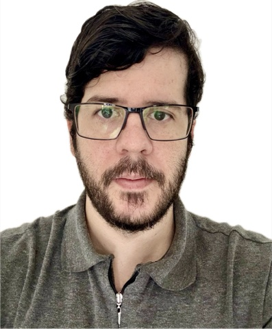
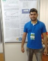

Início / Equipe
Equipe
Professores do Instituto de Engenharia e Geociências que fazem o laboratório e seus projetos.
Foto: ESA, projeto CarbonARA
Docentes
Professores do laboratório
-
Julio Tota da Silva
Coordenador · Ciências Atmosféricas
Meteorologista formado pela UFPA, mestre em Meteorologia pelo Inpe e doutor em Clima e Ambiente pelo Inpa. Trabalha com física e química da atmosfera e com as trocas de carbono, água e energia entre a floresta e o ar.
É coordenador local do CarbonARA-Brazil e vice-coordenador do projeto de rastreamento de radiossondas.
-

Helvecio Bezerra Leal Neto
Professor · Inteligência Artificial
Doutor e mestre em Computação Aplicada pelo Inpe e bacharel em Ciência da Computação pela Ufopa. Trabalha com inteligência artificial e ciência de dados aplicadas ao monitoramento ambiental, com foco no rastreamento automático de tempestades e na previsão de chuva de curtíssimo prazo.
É o autor do AmaView.
-
Antonio Marcos Delfino de Andrade
Professor · Ciências Atmosféricas
Meteorologista formado pela UFAL, onde também fez o mestrado, e doutor em Meteorologia pela UFCG. Trabalha com micrometeorologia, camada limite e radiação.
É coordenador do projeto de rastreamento de radiossondas.
Colaboração
Docentes colaboradores nos projetos
-

Raoni Aquino Silva de Santana
Instituto de Engenharia e Geociências
Colaborador no projeto de rastreamento de radiossondas.
-
Theomar Trindade de Araújo Tiburtino Neves
Observatório Atmosférico da Amazônia
Meteorologista formado pela UFAL e mestre pelo Inpe, com experiência em micrometeorologia e camada limite atmosférica. Colaborador no projeto de rastreamento de radiossondas.
Estudantes
Venha trabalhar com a gente
O laboratório recebe estudantes de graduação para iniciação científica, estágio e trabalho de conclusão de curso. O trabalho envolve instalação e manutenção de instrumentos, saídas de campo para a Fazenda Experimental e a Flona Tapajós, programação e análise de dados.
Quem tiver interesse pode procurar um dos professores do laboratório ou a coordenação do curso de Ciências Atmosféricas.